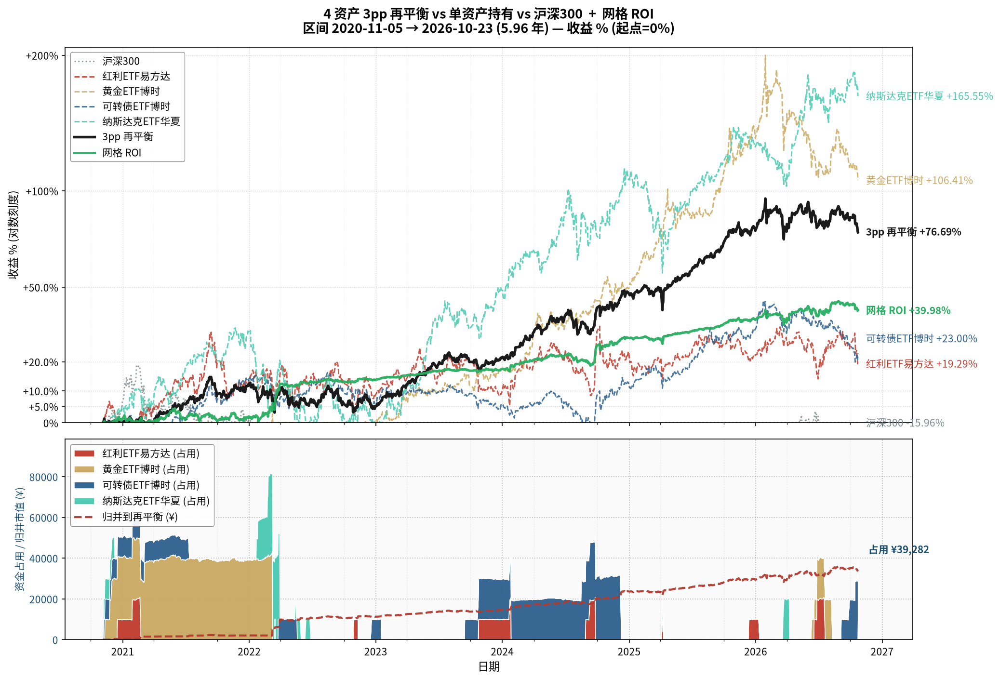

持仓收益
策略全景图
由 GitHub Action 每日 9:00 北京时间用 matplotlib 渲染.

复合网格 操作记录
复合网格 虚拟开/加/回本的逐笔记录，
来自 data/grid_state.json
的每资产 ops 字段。按日期倒序，最多显示最新 10 笔（可滚动）。
[自动] 蓝色 = record.py 日触发；[手动] 橙色 = 页面编辑器操作；
[回测] 紫灰 = 历史模拟成交，非实盘。
[回测] 行由 scripts/backfill_grid_ops.py
从 2020-11-05 起的全历史按 run_compound_grid 重放生成，
对应「策略全景图」底部的资金占用面板。
口径与实盘不同：回放每层固定 ¥10,000且按收盘价成交，
实盘引擎则用浮动仓位 layer_yuan 并以 K 线最低价触发。
因此回测的份额与盈亏不可与实盘逐笔对账，仅供量级对照。
最新持仓
交易记录
真实 ETF 交易 (3pp 再平衡) + 虚拟网格操作 (复合网格)
3pp 再平衡
每行一笔 ETF 买入/卖出。保存后会追加到
data/trades.json，
重算 data/holdings.json，
重跑 daily.yml 约 30 秒后 commit + 发邮件。
想"清仓" → 录入一笔 sell，数量 = 持仓数。
同一表单内累计金额 > 当前现金会被前端拦截 (服务端也会二次拒绝)。
复合网格
复合网格是虚拟的（不与真实交易挂钩），但开仓/加仓/回本会修改
data/grid_state.json。
操作后:
1) 立即重跑 daily.yml，约 30 秒后 history + chart + 邮件同步更新;
2) 加仓参考价 = entries[-1].price，即新加的这一笔价格，
下次自动加仓触发也用它（与自动路径一致）。
open = 强制开仓 (要求 in_cycle=false)；
add = 加仓 (要求 in_cycle=true)；
tp = 回本出场 (要求 in_cycle=true)。
出场规则（重要）：出场不再兑现浮盈，只卖出
累计投入 / 出场价 份，恰好回本；余下的份额
归并到再平衡的持仓（merged_shares）——
它们不再是网格的资产，而是组合的一部分，此后按再平衡的规则参与权重计算。
所以已实现盈亏在正常出场时恒为 0，网格的全部收益都沉淀在归并份额的市值里
—— 这套规则实质上把网格变成了「买入持有」。只有在低于成本手动出场时才会真的亏损。
归并份额是模拟口径：网格本身是虚拟策略，所以归并进组合的份额
也不会写进 data/trades.json（那里只记录真实成交）；
它们只参与页面/邮件里的组合权重与市值。
资金管理
| 资金池 | 资产 | 市值 | 余额 |
|---|---|---|---|
| 3pp再平衡 | — | ¥0.00 | ¥0.00 |
| 复合网格 | — | ¥0.00 | ¥0.00 |
| 合计 | ¥0.00 | ¥0.00 |
每行一笔 资金操作。
市值 = 已持仓 (3pp再平衡: ETF 持仓，含网格归并进来的份额;
复合网格: 虚拟仓位资金占用的当前价估值，
只算在周期内的层 —— 出场后本金收回，占用回落)；
余额 = 可立即动用的现金 (3pp再平衡: 真实现金; 复合网格: 虚拟现金)；
两者分别独立。 复合网格是虚拟的（不与真实交易挂钩），
但开仓/加仓/回本会修改
data/grid_state.json。
6 种操作: deposit_rebalance / deposit_grid /
withdraw_rebalance / withdraw_grid /
transfer_to_rebalance (复合网格→3pp再平衡) /
transfer_to_grid (3pp再平衡→复合网格)。
提现/转换不足时会被前端拦截 (服务端也会二次拒绝)。